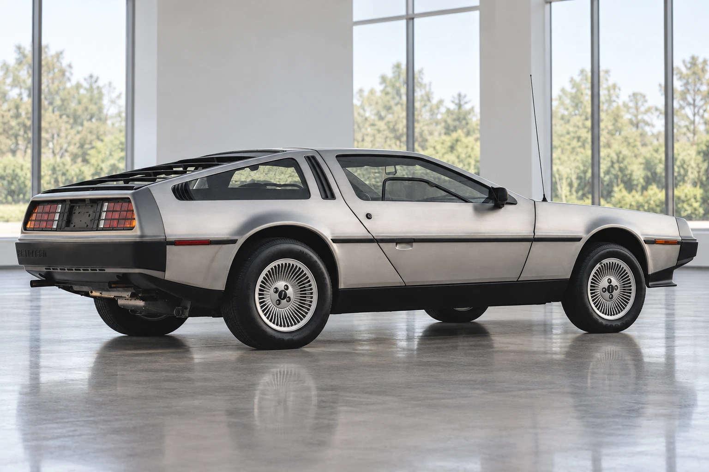
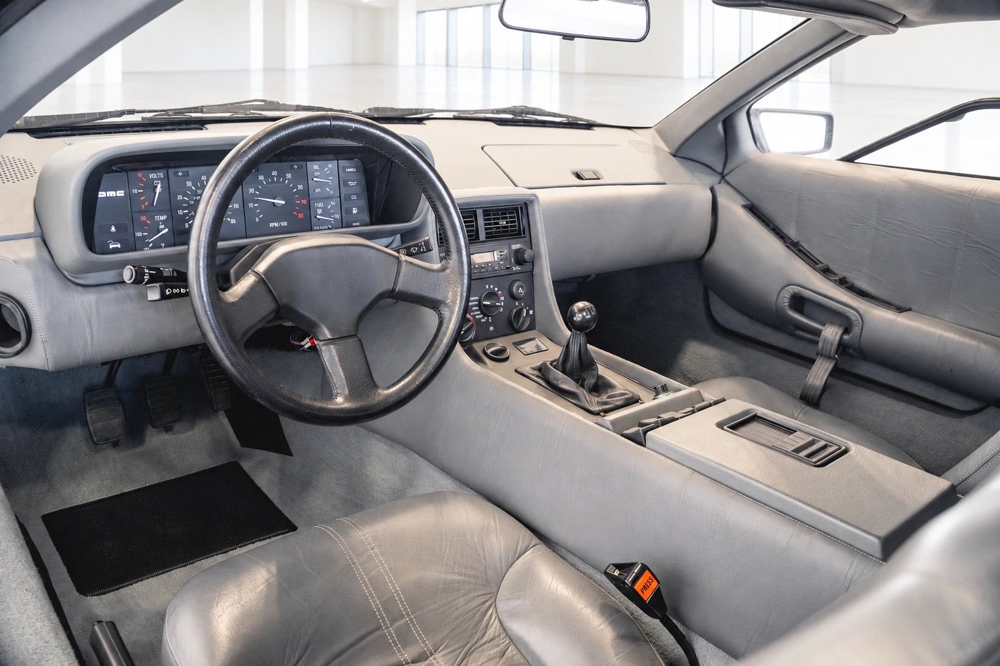

Before the DeLorean became a time machine on screen, it was a real road car and an attempt to build a new manufacturer. The stainless-steel body and gull-wing doors make the car easy to recognize. The less familiar story belongs to the factory at Dunmurry, near Belfast, and the people who had to turn a striking design into a saleable product.
That distinction is worth keeping in view. A film can give an automobile a second cultural life. It cannot explain how the original business worked, what its workers achieved or why production and sales moved at different speeds.
An unmistakable car, without the movie hardware
The production car used a rear-mounted PRV V6. The Southward Car Museum identifies the engine as 2,849 cc in its 1981 example. Its position is an essential part of understanding the car beneath the distinctive body.
The car illustrated here is a 1981 DMC-12 with a gray interior and five-speed manual transmission. Those choices matter when looking past its silhouette: this is a production coupe with ordinary driving controls, rather than a movie replica.

Dunmurry was central to the story
The Ulster Transport Museum records that DeLorean signed the factory agreement in 1978. The site was at Dunmurry, six miles southwest of Belfast, in a region facing substantial unemployment. The project was an industrial opportunity as well as an automotive venture.
The museum’s figures show the difficulty behind the launch: by the end of 1981, the factory had made 7,500 cars while the company had sold 3,000. DMC entered receivership in February 1982. The museum describes a total of about 9,000 cars and emphasizes the contribution of the Dunmurry workforce.
A production total and a sales total answer different questions. Building more cars does not solve a gap between what a factory makes and what buyers take home. Nor does the eventual failure erase the skills involved in creating a manufacturing operation. The business outcome and the workers’ achievement deserve separate attention.

The car that survived the company
The film arrived after the original company had failed. That later recognition changed how audiences encountered the car: many saw the prop before they saw an ordinary production example.
Looking at the car without fictional hardware restores a different perspective. There is a real cabin, a recognizable set of controls and a body that had to be manufactured, assembled and maintained. The DeLorean’s industrial story is compelling enough on those terms. Understanding it means looking beyond the founder to the product, the workforce and the demands of making a new business work.
Sources & image references
Updated October 13, 2026. Historical facts use museum sources. The image reference is one 1981 DMC-12, VIN SCEDT26T1BD003447; the listing reports fuel-system upgrades, so it is not evidence of an untouched engine bay. The article uses exterior and cabin views, not an invented engine view.
Keep exploring